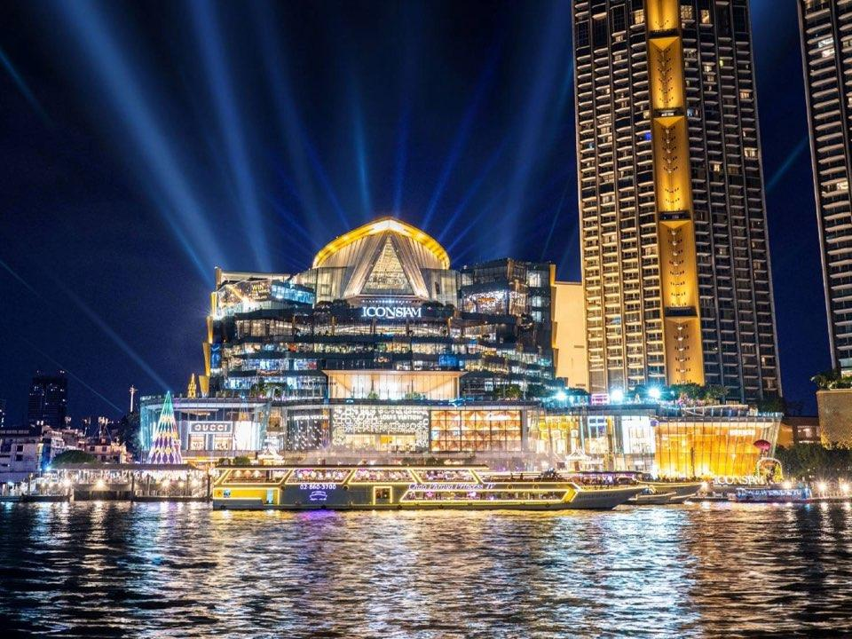
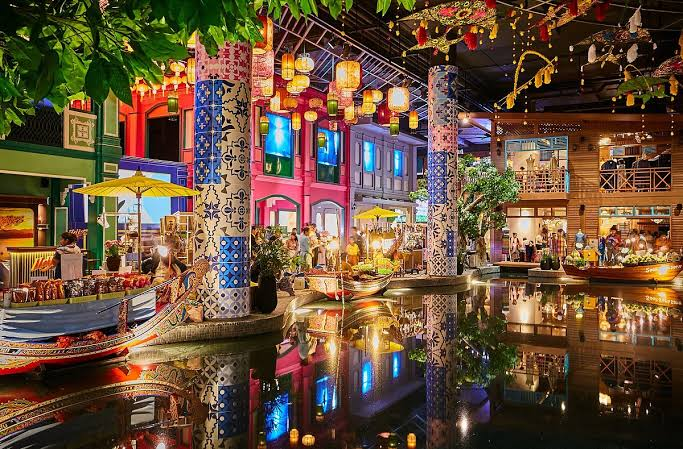
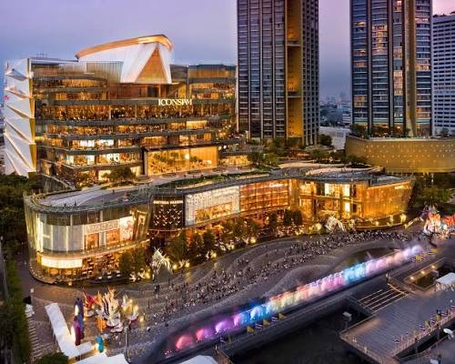
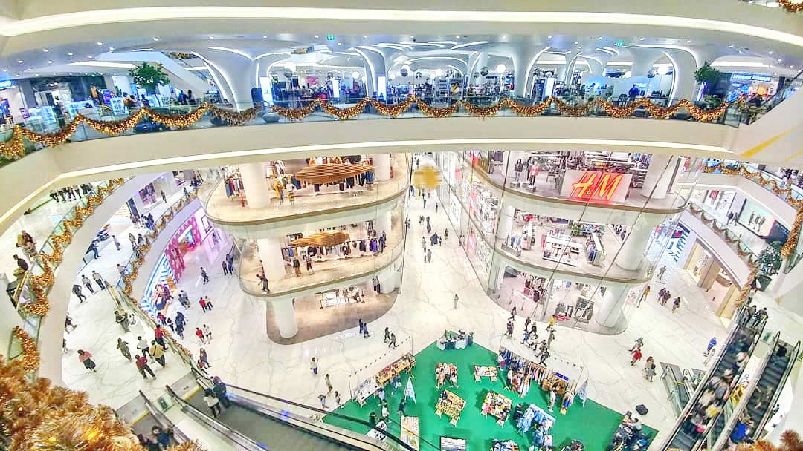
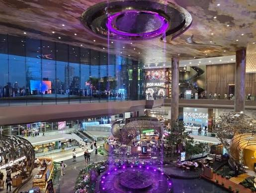
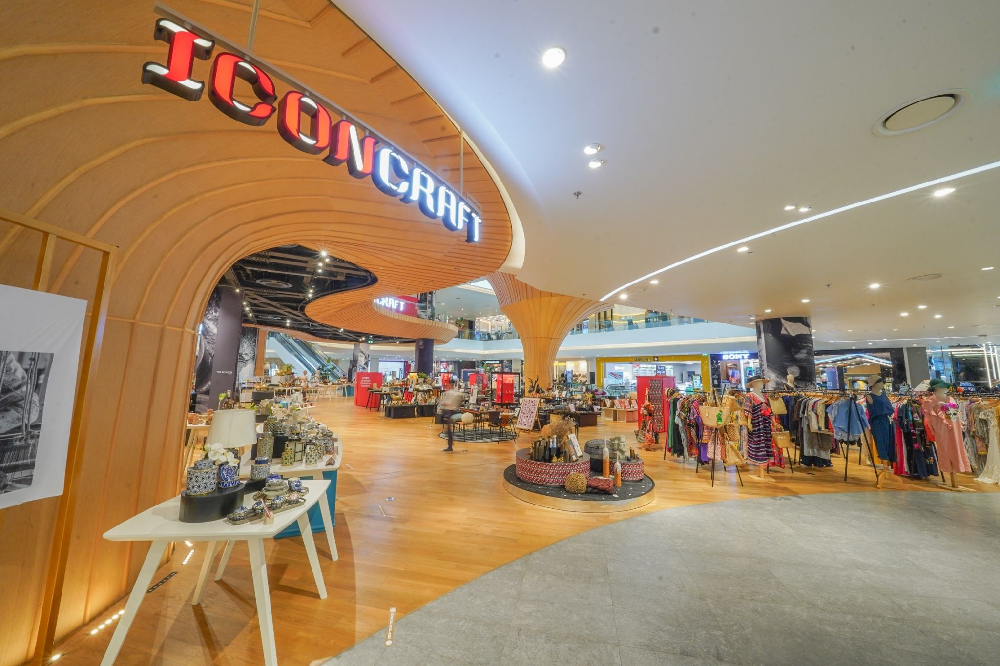
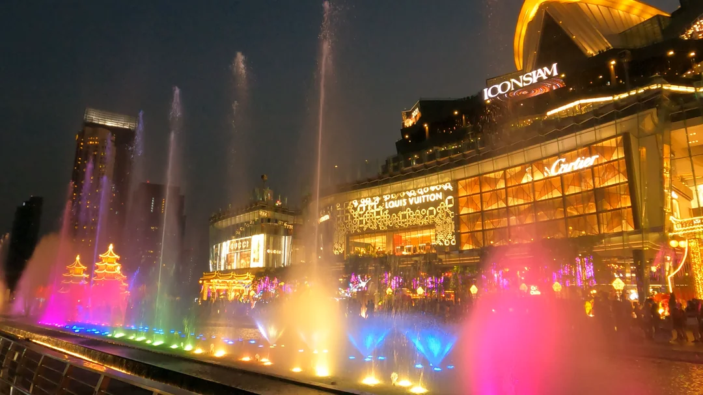

ICONSIAM — огромный торговый центр на берегу Чао Прайя

ICONSIAM — один из самых известных торговых и развлекательных комплексов Бангкока. Он расположен прямо на берегу реки Чао Прайя и объединяет магазины, рестораны, традиционный тайский рынок, развлечения и большую набережную.
Главная особенность ICONSIAM — возможность совместить обычный шопинг с прогулкой у реки. Внутри находятся сотни магазинов, рестораны разных кухонь мира и знаменитая зона SOOKSIAM, которая знакомит посетителей с культурой и кухней разных регионов Таиланда. ICONSIAM особенно интересен вечером, когда включается подсветка комплекса, а набережная становится одним из популярных мест для прогулок и фотографий.
Где находится
ICONSIAM находится на западном берегу реки Чао Прайя, в районе Khlong San в Бангкоке.
Адрес: 299 Charoen Nakhon Rd, Khlong Ton Sai, Khlong San, Bangkok 10600, Thailand
Комплекс расположен напротив центральной части Бангкока, поэтому с его территории открывается хороший вид на реку и противоположный берег города.
Стоимость посещения
Вход в ICONSIAM бесплатный.
Для посещения самого торгового центра билет не требуется. Можно свободно гулять по этажам, посещать магазины, рестораны и общественные пространства. Отдельные развлечения, выставки и мероприятия внутри комплекса могут иметь собственную стоимость.
Время работы
ICONSIAM работает ежедневно с 10:00 до 22:00.
Лучшее время для посещения — вторая половина дня. Можно сначала осмотреть магазины и SOOKSIAM, затем поужинать и выйти к реке ближе к вечеру.
Как добраться
BTS и Gold Line
Самый удобный способ — воспользоваться наземным метро BTS.Нужно доехать до станции Krung Thon Buri, а затем перейти на линию Gold Line.
На Gold Line нужно доехать до станции Charoen Nakhon. От неё до ICONSIAM можно быстро дойти пешком.
На речном транспорте
До ICONSIAM можно добраться на лодке по реке Чао Прайя. Это один из самых интересных вариантов, потому что уже сама поездка по реке становится частью прогулки.
До комплекса ходят шаттл-боты с нескольких причалов, включая Sathorn Pier. Поездка позволяет увидеть Бангкок с воды и подъехать непосредственно к ICONSIAM.
Такси или Grab
До ICONSIAM можно также доехать на такси или воспользоваться приложением Grab. Однако в центральном Бангкоке часто бывают пробки, поэтому BTS и речной транспорт обычно являются более предсказуемыми вариантами.
Что посмотреть внутри
ICONSIAM занимает огромную территорию и состоит из большого количества магазинов, ресторанов и развлекательных зон. Даже без покупок здесь можно провести несколько часов.
SOOKSIAM

SOOKSIAM — одна из самых интересных частей ICONSIAM. Это большая тематическая зона, стилизованная под традиционный тайский рынок.
Здесь представлены блюда, продукты, сувениры и товары из разных регионов Таиланда. Можно попробовать местную еду и увидеть традиционные элементы тайской культуры, не выезжая за пределы Бангкока.
Для туристов это особенно интересное место, потому что SOOKSIAM позволяет познакомиться с разными регионами страны в одном месте.
ICONSIAM River Park

River Park — открытая территория ICONSIAM непосредственно у реки Чао Прайя.
Отсюда открывается вид на реку, лодки и противоположный берег Бангкока. Это хорошее место для прогулки и фотографий.
В вечернее время здесь особенно приятно находиться благодаря подсветке комплекса и виду на ночной город.
Торговые галереи
 |
 |
Отдельная часть комплекса посвящена SIAM Takashimaya — японскому универмагу, расположенному внутри ICONSIAM.
ICONCRAFT

ICONCRAFT — пространство, посвящённое тайским дизайнерам и местным мастерам.
Здесь можно найти изделия ручной работы, украшения, предметы интерьера, одежду и другие товары, созданные тайскими производителями.
Это хорошее место для покупки необычных сувениров, которые отличаются от стандартных туристических подарков.
Фонтаны и вечерние шоу

В районе River Park регулярно проходят различные мероприятия и представления. Одним из самых заметных элементов комплекса является большая зона фонтанов у реки.
В вечернее время здесь можно увидеть световые и водные представления. Расписание отдельных шоу может меняться, поэтому перед посещением лучше проверить актуальную программу.
Вид на Чао Прайя

ICONSIAM находится непосредственно у реки Чао Прайя, поэтому с территории комплекса открывается хороший вид на воду и город.
Особенно красиво здесь вечером, когда начинают освещаться здания и лодки на реке.
Что находится рядом
ICONSIAM расположен на берегу Чао Прайя, поэтому рядом находятся различные причалы, отели, рестораны и другие достопримечательности.
Река Чао Прайя
Река Чао Прайя — главная природная достопримечательность рядом с ICONSIAM. После посещения торгового центра можно продолжить прогулку по реке или воспользоваться речным транспортом.King Power Mahanakhon
Маханакхон находится в центральной части Бангкока. После ICONSIAM можно отправиться туда, чтобы посмотреть на город уже не с уровня реки, а с высоты более 300 метров.Wat Arun
Ват Арун расположен на другом берегу Чао Прайя. Его посещение удобно совместить с поездкой по реке и прогулкой по центральной части Бангкока.Важное для туристов
ICONSIAM очень большой. На его посещение лучше выделить несколько часов, особенно если вы хотите посмотреть SOOKSIAM, магазины и набережную.
Лучше приезжать во второй половине дня. Так можно спокойно осмотреть комплекс днём, поужинать и встретить вечер у реки.
Попробуйте SOOKSIAM. Это одна из главных причин посетить ICONSIAM, если вам интересна тайская кухня и культура.
Не ограничивайтесь магазинами. Обязательно выйдите к River Park — именно расположение у реки делает ICONSIAM особенным.
Рассмотрите поездку на лодке. Добраться до ICONSIAM по Чао Прайя интереснее, чем просто ехать на такси.
Следите за расписанием мероприятий. Шоу, выставки и другие события могут проходить в разные дни и часы.
Как лучше провести время в ICONSIAM
Оптимальный вариант — приехать во второй половине дня и постепенно перемещаться от магазинов к набережной.
Например:
- 15:00 — приезд в ICONSIAM;
- 15:15 — прогулка по торговым этажам;
- 16:00 — посещение SOOKSIAM;
- 17:00 — прогулка по ICONCRAFT;
- 18:00 — ужин;
- 19:00 — прогулка по River Park;
- 19:30 — фотографии у реки;
- 20:00 — просмотр вечернего шоу, если оно проходит в этот день;
- 21:00 — прогулка по комплексу или возвращение на речном транспорте.
Такой маршрут позволяет увидеть ICONSIAM не только как торговый центр, но и как большое туристическое пространство на берегу Чао Прайя.